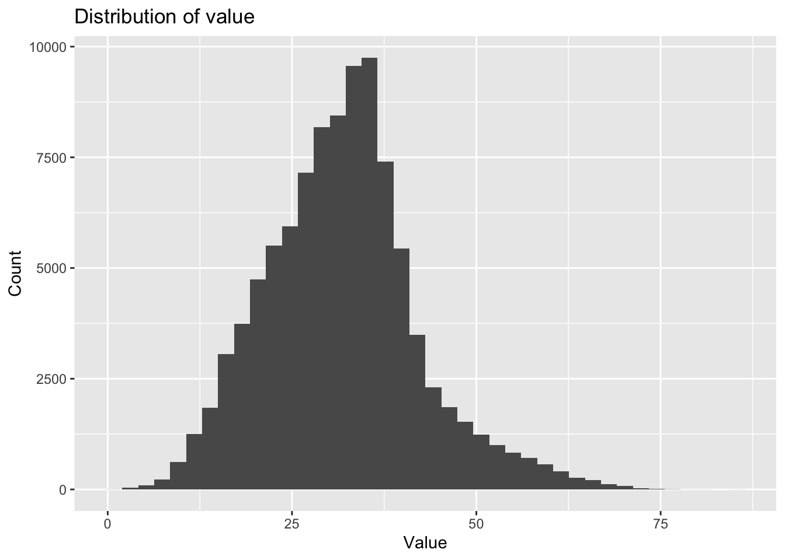
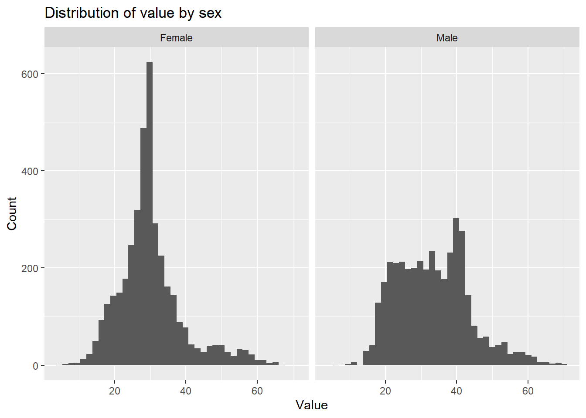
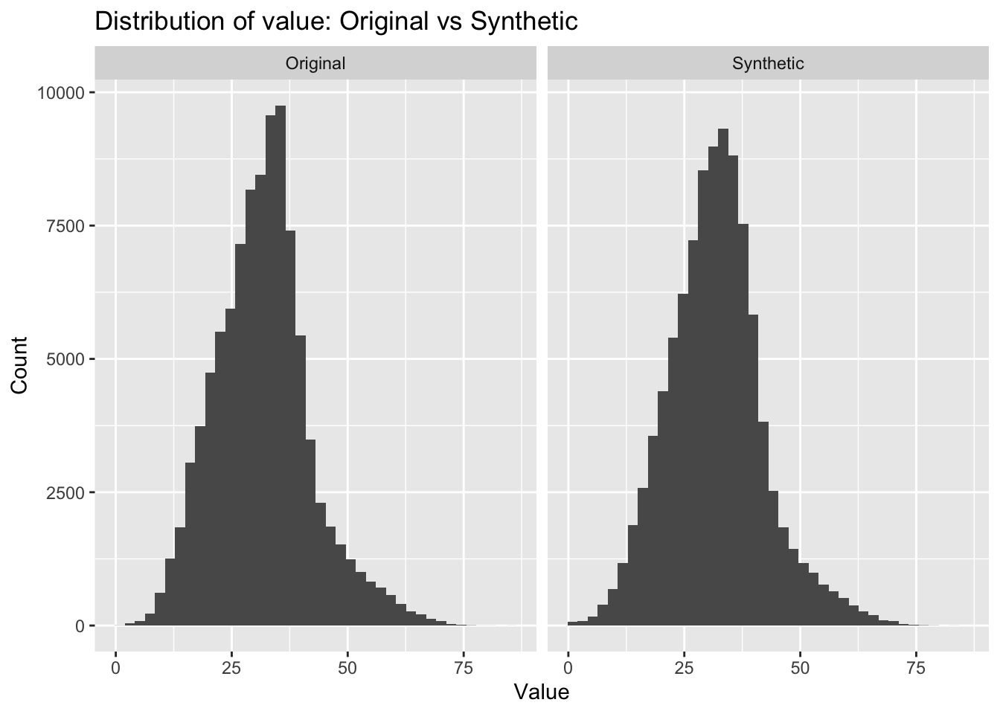
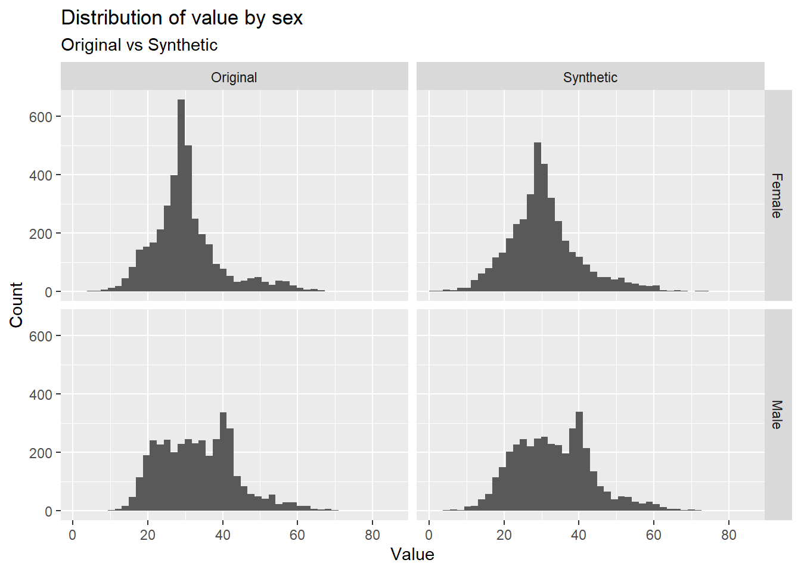

library(tidyverse)CDC Data Exercise
Data source
For this exercise, I used a dataset from the CDC data portal (Socrata).
Dataset link: https://data.cdc.gov/Nutrition-Physical-Activity-and-Obesity/Nutrition-Physical-Activity-and-Obesity-Behavioral/hn4x-zwk7
I pulled a subset of the data from 2018 onward and limited the number of rows to keep the dataset manageable. The data include a mix of continuous and categorical variables, which makes them suitable for exploratory and descriptive analysis.
library(tidyverse)
# Load the local CSV file (saved in your repo)
data_file <- "cdc_obesity_2018plus.csv"
raw <- readr::read_csv(data_file, show_col_types = FALSE)
# Basic checks
stopifnot(nrow(raw) > 0)
glimpse(raw)Rows: 110,880
Columns: 33
$ YearStart <dbl> 2011, 2011, 2011, 2011, 2011, 2011, 2011, 2…
$ YearEnd <dbl> 2011, 2011, 2011, 2011, 2011, 2011, 2011, 2…
$ LocationAbbr <chr> "AL", "AL", "AL", "AL", "AL", "AL", "AL", "…
$ LocationDesc <chr> "Alabama", "Alabama", "Alabama", "Alabama",…
$ Datasource <chr> "Behavioral Risk Factor Surveillance System…
$ Class <chr> "Obesity / Weight Status", "Obesity / Weigh…
$ Topic <chr> "Obesity / Weight Status", "Obesity / Weigh…
$ Question <chr> "Percent of adults aged 18 years and older …
$ Data_Value_Unit <chr> NA, NA, NA, NA, NA, NA, NA, NA, NA, NA, NA,…
$ Data_Value_Type <chr> "Value", "Value", "Value", "Value", "Value"…
$ Data_Value <dbl> 34.8, 35.8, 32.3, 34.1, 28.8, 16.3, 27.8, 3…
$ Data_Value_Alt <dbl> 34.8, 35.8, 32.3, 34.1, 28.8, 16.3, 27.8, 3…
$ Data_Value_Footnote_Symbol <chr> NA, NA, NA, NA, NA, NA, NA, NA, NA, NA, NA,…
$ Data_Value_Footnote <chr> NA, NA, NA, NA, NA, NA, NA, NA, NA, NA, NA,…
$ Low_Confidence_Limit <dbl> 31.3, 31.1, 28.0, 29.7, 25.4, 12.6, 14.4, 3…
$ High_Confidence_Limit <dbl> 38.5, 40.8, 36.8, 38.8, 32.5, 20.9, 46.9, 4…
$ Sample_Size <dbl> 1367, 757, 861, 785, 1125, 356, 58, 598, 86…
$ Total <chr> NA, NA, NA, NA, NA, NA, NA, NA, NA, NA, NA,…
$ `Age(years)` <chr> NA, NA, NA, NA, NA, "18 - 24", NA, "25 - 34…
$ Education <chr> NA, NA, NA, NA, NA, NA, NA, NA, NA, NA, NA,…
$ Sex <chr> NA, NA, NA, NA, NA, NA, NA, NA, NA, NA, NA,…
$ Income <chr> "$15,000 - $24,999", "$25,000 - $34,999", "…
$ `Race/Ethnicity` <chr> NA, NA, NA, NA, NA, NA, "2 or more races", …
$ GeoLocation <chr> "(32.840571122, -86.631860762)", "(32.84057…
$ ClassID <chr> "OWS", "OWS", "OWS", "OWS", "OWS", "OWS", "…
$ TopicID <chr> "OWS1", "OWS1", "OWS1", "OWS1", "OWS1", "OW…
$ QuestionID <chr> "Q036", "Q036", "Q036", "Q036", "Q036", "Q0…
$ DataValueTypeID <chr> "VALUE", "VALUE", "VALUE", "VALUE", "VALUE"…
$ LocationID <dbl> 1, 1, 1, 1, 1, 1, 1, 1, 1, 1, 1, 1, 1, 1, 1…
$ StratificationCategory1 <chr> "Income", "Income", "Income", "Income", "In…
$ Stratification1 <chr> "$15,000 - $24,999", "$25,000 - $34,999", "…
$ StratificationCategoryId1 <chr> "INC", "INC", "INC", "INC", "INC", "AGEYR",…
$ StratificationID1 <chr> "INC1525", "INC2535", "INC3550", "INC5075",…dim(raw)[1] 110880 33Clean and Select variables
I selected a subset of variables that includes both numeric and categorical data. Basic cleaning steps included renaming variables, converting empty strings to missing values, and removing observations with missing outcome values.
dat <- raw %>%
transmute(
year = YearStart,
state = LocationAbbr,
location = LocationDesc,
question = Question,
value = Data_Value,
unit = Data_Value_Unit,
value_type = Data_Value_Type,
sex = Sex,
age_group = `Age(years)`
) %>%
mutate(across(where(is.character), ~ na_if(.x, ""))) %>%
filter(!is.na(value))
glimpse(dat)Rows: 97,666
Columns: 9
$ year <dbl> 2011, 2011, 2011, 2011, 2011, 2011, 2011, 2011, 2011, 2011,…
$ state <chr> "AL", "AL", "AL", "AL", "AL", "AL", "AL", "AL", "AL", "AL",…
$ location <chr> "Alabama", "Alabama", "Alabama", "Alabama", "Alabama", "Ala…
$ question <chr> "Percent of adults aged 18 years and older who have obesity…
$ value <dbl> 34.8, 35.8, 32.3, 34.1, 28.8, 16.3, 27.8, 35.2, 35.5, 38.0,…
$ unit <chr> NA, NA, NA, NA, NA, NA, NA, NA, NA, NA, NA, NA, NA, NA, NA,…
$ value_type <chr> "Value", "Value", "Value", "Value", "Value", "Value", "Valu…
$ sex <chr> NA, NA, NA, NA, NA, NA, NA, NA, NA, NA, NA, NA, NA, NA, NA,…
$ age_group <chr> NA, NA, NA, NA, NA, "18 - 24", NA, "25 - 34", "35 - 44", "4…Descriptive Summaries
The following summaries describe the distribution of the main continuous variable and the composition of selected categorical variables. These summaries provide enough information for a teammate to generate synthetic data with similar characteristics.
dat %>%
summarize(
n = n(),
mean = mean(value, na.rm = TRUE),
sd = sd(value, na.rm = TRUE),
min = min(value, na.rm = TRUE),
median = median(value, na.rm = TRUE),
max = max(value, na.rm = TRUE)
)# A tibble: 1 × 6
n mean sd min median max
<int> <dbl> <dbl> <dbl> <dbl> <dbl>
1 97666 31.8 10.3 0.9 31.8 85.3cat_vars <- c("state", "sex", "age_group", "value_type", "unit")
for (v in cat_vars) {
print(v)
print(
dat %>%
count(.data[[v]], sort = TRUE) %>%
mutate(pct = n / sum(n))
)
cat("\n\n")
}[1] "state"
# A tibble: 55 × 3
state n pct
<chr> <int> <dbl>
1 US 2013 0.0206
2 WA 1975 0.0202
3 MD 1934 0.0198
4 CA 1929 0.0198
5 CO 1925 0.0197
6 AZ 1922 0.0197
7 MN 1909 0.0195
8 OH 1904 0.0195
9 TX 1900 0.0195
10 KS 1899 0.0194
# ℹ 45 more rows
[1] "sex"
# A tibble: 3 × 3
sex n pct
<chr> <int> <dbl>
1 <NA> 89974 0.921
2 Female 3846 0.0394
3 Male 3846 0.0394
[1] "age_group"
# A tibble: 7 × 3
age_group n pct
<chr> <int> <dbl>
1 <NA> 74590 0.764
2 18 - 24 3846 0.0394
3 25 - 34 3846 0.0394
4 35 - 44 3846 0.0394
5 45 - 54 3846 0.0394
6 55 - 64 3846 0.0394
7 65 or older 3846 0.0394
[1] "value_type"
# A tibble: 1 × 3
value_type n pct
<chr> <int> <dbl>
1 Value 97666 1
[1] "unit"
# A tibble: 2 × 3
unit n pct
<chr> <int> <dbl>
1 <NA> 93505 0.957
2 % 4161 0.0426Figures
The figures below show the distribution of the main numeric variable overall and stratified by sex.
ggplot(dat, aes(x = value)) +
geom_histogram(bins = 40) +
labs(
title = "Distribution of value",
x = "Value",
y = "Count"
)
dat %>%
filter(!is.na(sex)) %>%
ggplot(aes(x = value)) +
geom_histogram(bins = 40) +
facet_wrap(~ sex) +
labs(
title = "Distribution of value by sex",
x = "Value",
y = "Count"
)
AI Use Statement
I used AI tools for debugging and technical guidance (e.g., resolving rendering errors and fixing column references). All data decisions, cleaning logic, and exploratory analysis were completed independently.
This section was contributed by Nalany Richardson
The goals for this section is to 1. create a synthetic dataset that mimics the structure and characteristics of the original CDC dataset, and 2. compare it to the original dataset and EDA using LLMs. I will be using Chatgpt 5.2 ‘Thinking’ along with Positron’s chatgpt package.
Alex structured the dataset as dat with the following variables: year, state, location, question, value, unit, value_type, sex, and age_group.
Prompt 1: I need to create a synthetic dataset that mimics the structure and characteristics of cdc_obesity_2018plus.csv. The dataset should have the same variables: year, state, location, question, value, unit, value_type, sex, and age_group. Lets do this one step at a time. Note: I attached the original spreadsheet and said: Attached is the spreadsheet containing the data I want a synthetic dataset based off from the original analysis.
Each chunk created via the prompt is sent separately and vetted before moving on. Any portions changed without AI input will have a comment within the chunk.
Loading and Cleaning Data for Synthetic Dataset
library(tidyverse)
library(here)
set.seed(1234)
raw <- readr::read_csv(
here::here("cdcdata-exercise", "cdc_obesity_2018plus.csv"),
show_col_types = FALSE
)
stopifnot(nrow(raw) > 0)dat <- raw %>% # saves raw data as dat for next steps in synth creation
transmute( # creates new dataset with same variables as in original, with cleaned names and formatting
year = YearStart,
state = LocationAbbr,
location = LocationDesc,
question = Question,
value = Data_Value,
unit = Data_Value_Unit,
value_type = Data_Value_Type,
sex = Sex,
age_group = `Age(years)`
) %>%
mutate(across(where(is.character), ~ na_if(.x, ""))) %>% # if values are empty strings, convert to NA for consistency in handling missing data
filter(!is.na(value)) # removes rows where value var is missing# Reproducibility: set seed for any random processes
set.seed(1234) # original seed was 2026, changed it because i prefer simple numbers.
# Reproducibility
set.seed(1234)
# Ensure Part 1 object exists
stopifnot(exists("dat"))
# helper: sample from observed distribution including NA
# helper makes synthetic data preserve the same distribution of values (including missingness) as the original data
sample_like <- function(x, n) {
tx <- table(x, useNA = "ifany") # counts how often each value (including NA) appears in the original data
p <- as.numeric(tx) / sum(tx) # coverts counts to probabilities/proportions
lv <- names(tx) # saves the unique values (including NA) as a character vector
s <- sample(lv, size = n, replace = TRUE, prob = p)
ifelse(s == "<NA>", NA, s) # converts string "<NA>" back to actual NA values in the synthetic data
}
n_rows <- nrow(dat) # stores the number of rows in the original dataset so synth dataset can copy.
# keep valid state-location pairs
state_location_map <- dat %>%
filter(!is.na(state), !is.na(location)) %>%
distinct(state, location)
# build synthetic scaffold (without value first)
dat_syn <- tibble(
year = as.numeric(sample_like(dat$year, n_rows)),
state = sample_like(dat$state, n_rows),
question = sample_like(dat$question, n_rows),
unit = sample_like(dat$unit, n_rows),
value_type = sample_like(dat$value_type, n_rows),
sex = sample_like(dat$sex, n_rows),
age_group = sample_like(dat$age_group, n_rows)
) %>%
left_join(state_location_map, by = "state")
# fallback if any missing locations remain
if (any(is.na(dat_syn$location))) {
dat_syn$location[is.na(dat_syn$location)] <-
sample_like(dat$location, sum(is.na(dat_syn$location))) # fills in any missing locations by sampling from the original location distribution, ensuring all rows have a location value.
}# now we can check out the synthetic dataset and compare it to the original
glimpse(dat_syn) # check syn dataset structureRows: 97,666
Columns: 8
$ year <dbl> 2017, 2013, 2013, 2013, 2020, 2021, 2017, 2019, 2021, 2011,…
$ state <chr> "NE", "WV", "MA", "HI", "VA", "MD", "ME", "NV", "ME", "OR",…
$ question <chr> "Percent of adults who report consuming fruit less than one…
$ unit <chr> NA, NA, NA, NA, NA, NA, NA, NA, NA, NA, NA, NA, NA, "%", NA…
$ value_type <chr> "Value", "Value", "Value", "Value", "Value", "Value", "Valu…
$ sex <chr> NA, "Female", NA, NA, NA, NA, NA, NA, NA, NA, NA, NA, NA, N…
$ age_group <chr> NA, NA, NA, NA, NA, NA, NA, NA, NA, NA, "65 or older", NA, …
$ location <chr> "Nebraska", "West Virginia", "Massachusetts", "Hawaii", "Vi…dim(dat_syn) # check syn dataset dimensions[1] 97666 8We can see that the synthetic dataset has the same number of rows and 8 variables (will be 9 once we add. value).
# Simulate value using subgroup stats + global fallback
g_mean <- mean(dat$value, na.rm = TRUE)
g_sd <- sd(dat$value, na.rm = TRUE)
v_min <- min(dat$value, na.rm = TRUE)
v_max <- max(dat$value, na.rm = TRUE)
# subgroup means/sd by question + sex + age group
# Chatgpt recommeneded grouping to make synth data more realistic by preserving original data patterns. Can be skipped though...
grp <- dat %>%
group_by(question, sex, age_group) %>%
summarise(
mu = mean(value, na.rm = TRUE),
sd = sd(value, na.rm = TRUE),
.groups = "drop"
)
# add subgroup params to synthetic rows and simulate value
dat_syn <- dat_syn %>%
left_join(grp, by = c("question", "sex", "age_group")) %>%
mutate(
mu = ifelse(is.na(mu), g_mean, mu),
sd = ifelse(is.na(sd) | sd <= 0, g_sd, sd),
value = rnorm(n(), mean = mu, sd = sd),
value = pmax(v_min, pmin(v_max, value))
) %>%
select(year, state, location, question, value, unit, value_type, sex, age_group)# quick checks
dim(dat_syn)[1] 97666 9summary(dat_syn$value) Min. 1st Qu. Median Mean 3rd Qu. Max.
0.90 25.05 31.68 31.78 37.63 82.64 Here we can see that the value variable in the synthetic dataset has been simulated to have a similar distribution to the original data.
Descriptive Summaries with Synthetic Data
Now we can compare the descriptive summaries of the original and synthetic datasets to see how well the synthetic data mimics the original. I’ve pulled the code from the original EDA section for easy comparison. For the prompt, I asked: Now that we have the synthetic dataset, I want to compare the descriptive summaries (I pasted summaries code).
cat_vars <- c("state", "sex", "age_group", "value_type", "unit")
for (v in cat_vars) {
cat("\n====================\n")
cat("Variable:", v, "\n")
cat("====================\n")
comp_wide <- bind_rows(
dat %>% count(.data[[v]], name = "n") %>% mutate(dataset = "original"),
dat_syn %>% count(.data[[v]], name = "n") %>% mutate(dataset = "synthetic")
) %>%
group_by(dataset) %>%
mutate(pct = n / sum(n)) %>%
ungroup() %>%
select(value = .data[[v]], dataset, n, pct) %>% # pivot wider converges the original and synthetic summaries into a single table for side-by-side comparison
# I had to add pivot wider because Chatgpt's original code printed them one after another and it was visually gross to look at...
pivot_wider(
names_from = dataset,
values_from = c(n, pct)
) %>%
mutate(
diff_pct = pct_synthetic - pct_original
) %>%
arrange(desc(abs(diff_pct)))
print(comp_wide, n = 20)
cat("\n")
}
====================
Variable: state
====================# A tibble: 55 × 6
value n_original n_synthetic pct_original pct_synthetic diff_pct
<chr> <int> <int> <dbl> <dbl> <dbl>
1 DE 1787 1947 0.0183 0.0199 0.00164
2 CA 1929 2024 0.0198 0.0207 0.000973
3 GU 1375 1466 0.0141 0.0150 0.000932
4 LA 1792 1701 0.0183 0.0174 -0.000932
5 NC 1859 1944 0.0190 0.0199 0.000870
6 SC 1890 1816 0.0194 0.0186 -0.000758
7 AR 1805 1732 0.0185 0.0177 -0.000747
8 IA 1774 1707 0.0182 0.0175 -0.000686
9 TX 1900 1966 0.0195 0.0201 0.000676
10 OH 1904 1970 0.0195 0.0202 0.000676
11 MN 1909 1974 0.0195 0.0202 0.000666
12 KY 1618 1555 0.0166 0.0159 -0.000645
13 NY 1896 1833 0.0194 0.0188 -0.000645
14 UT 1871 1929 0.0192 0.0198 0.000594
15 US 2013 1956 0.0206 0.0200 -0.000584
16 WA 1975 2031 0.0202 0.0208 0.000573
17 VA 1867 1812 0.0191 0.0186 -0.000563
18 AZ 1922 1871 0.0197 0.0192 -0.000522
19 CT 1872 1821 0.0192 0.0186 -0.000522
20 AL 1779 1829 0.0182 0.0187 0.000512
# ℹ 35 more rows
====================
Variable: sex
====================
# A tibble: 3 × 6
value n_original n_synthetic pct_original pct_synthetic diff_pct
<chr> <int> <int> <dbl> <dbl> <dbl>
1 <NA> 89974 89961 0.921 0.921 -0.000133
2 Male 3846 3856 0.0394 0.0395 0.000102
3 Female 3846 3849 0.0394 0.0394 0.0000307
====================
Variable: age_group
====================
# A tibble: 7 × 6
value n_original n_synthetic pct_original pct_synthetic diff_pct
<chr> <int> <int> <dbl> <dbl> <dbl>
1 55 - 64 3846 3937 0.0394 0.0403 0.000932
2 65 or older 3846 3786 0.0394 0.0388 -0.000614
3 45 - 54 3846 3897 0.0394 0.0399 0.000522
4 25 - 34 3846 3805 0.0394 0.0390 -0.000420
5 18 - 24 3846 3813 0.0394 0.0390 -0.000338
6 <NA> 74590 74579 0.764 0.764 -0.000113
7 35 - 44 3846 3849 0.0394 0.0394 0.0000307
====================
Variable: value_type
====================
# A tibble: 1 × 6
value n_original n_synthetic pct_original pct_synthetic diff_pct
<chr> <int> <int> <dbl> <dbl> <dbl>
1 Value 97666 97666 1 1 0
====================
Variable: unit
====================
# A tibble: 2 × 6
value n_original n_synthetic pct_original pct_synthetic diff_pct
<chr> <int> <int> <dbl> <dbl> <dbl>
1 <NA> 93505 93457 0.957 0.957 -0.000491
2 % 4161 4209 0.0426 0.0431 0.000491Figures with Synthetic Data
Finally, we can also compare the figures of the original and synthetic datasets side by side. For the prompt: Now i want to compare the figures of my synthetic data to the original data side by side. lets do this 1 figure at a time (then i pasted the original code).
bind_rows(
dat %>% mutate(dataset = "Original"),
dat_syn %>% mutate(dataset = "Synthetic")
) %>%
ggplot(aes(x = value)) +
geom_histogram(bins = 40) +
facet_wrap(~ dataset, nrow = 1) +
labs(
title = "Distribution of value: Original vs Synthetic",
x = "Value",
y = "Count"
)
Figure 1 shows that we maintained the same distribution of value in the synthetic data! Our peak is slightly smaller and the tail is a bit shorter, but the overall shape is very similar. Huzzah!
For the next prompt I asked: Now i want to do figure 2. I want to split it so that distribution of value by sex has original Female figure beside synthetic Female figure, original Male by synthetic Male.
bind_rows( # binds original and synthetic datasets together for faceting
dat %>% mutate(dataset = "Original"),
dat_syn %>% mutate(dataset = "Synthetic")
) %>%
filter(!is.na(sex), sex %in% c("Female", "Male")) %>%
ggplot(aes(x = value)) +
geom_histogram(bins = 40) +
facet_grid(sex ~ dataset) +
coord_cartesian(xlim = range(c(dat$value, dat_syn$value), na.rm = TRUE)) +
labs(
title = "Distribution of value by sex",
subtitle = "Original vs Synthetic", # Chatgpt did not fix titles so I adjusted title and created a subtitle for clarity
x = "Value",
y = "Count"
)
Figure 2 also shows that the synthetic data mimics the original data well within each sex group. The distributions for both Female and Male in the synthetic data resemble those in the original data. This is good because it shows that the subgroup simulation (which was given as an optional code from the LLM) was effective in preserving these patterns.
AI Use Statement
I used Chatgpt 5.2 ‘Thinking’ to help me create the synthetic dataset and compare it to the original dataset. I provided the original dataset and the code for the descriptive summaries and figures. Each code chunk was reviewed and tweaked before running.
Some adjustments had to be made, as Chatgpt does not default to using here() and will readily hallucinate paths to data, and will consistently forget what the analysis is if you push it for corrections.
All statements, explanations, and so forth outside of base code chunks were done by me in this section, with all edits and checks to confirm synthetic data output looked appropriate also done by me. Cheers!